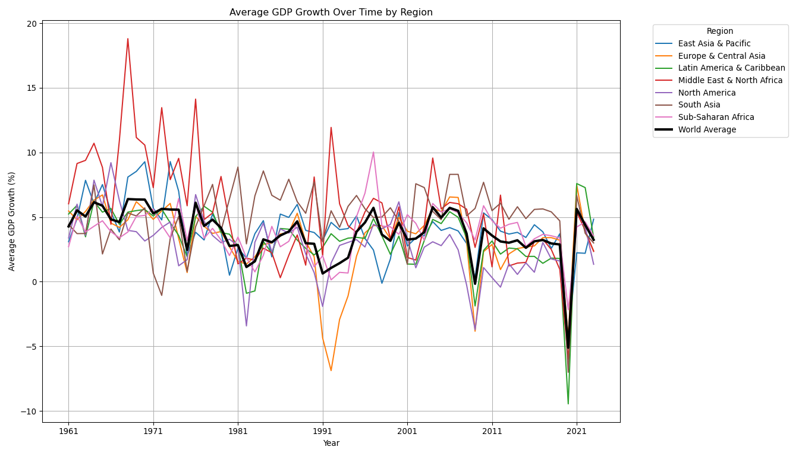
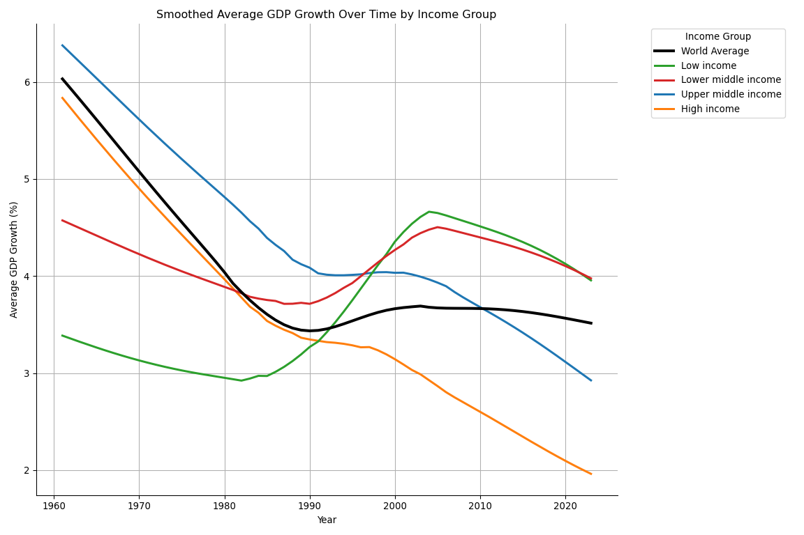

| decade | count_growth | min_growth | avg_growth_decade | max_growth | |
|---|---|---|---|---|---|
| 0 | 1960s | 1026 | -27.270000 | 5.461588 | 81.887797 |
| 1 | 1970s | 1423 | -46.433035 | 4.997033 | 76.620155 |
| 2 | 1980s | 1663 | -42.451118 | 2.991529 | 34.600001 |
| 3 | 1990s | 1942 | -64.047107 | 2.897831 | 149.972963 |
| 4 | 2000s | 2033 | -36.656780 | 4.039469 | 63.379875 |
| 5 | 2010s | 2093 | -50.338515 | 3.183693 | 86.826748 |
| 6 | 2020s | 819 | -54.336155 | 2.009832 | 75.061377 |
Economic Development Analysis
QTM350 Final Project
Introduction
Data Description
This data is from the World Bank’s World Development Indicators. We will be utilizing a variety of economic development indicators to conduct this analysis. Our main indicators are GDP per capita, employment to population ratio, GDP growth, and Davis's Indicator:
GDP per capitaemployment to population ratiois a variable that measures the proportion of a country’s working-age population that is currently employed. It reflects the share of people aged 15 and older who are participating in the labor market by holding a job. A higher employment-to-population ratio indicates that a larger percentage of the population is contributing to economic production, while a lower ratio suggests that many individuals are either unemployed, not actively seeking work, or otherwise outside the labor force. This metric is critical for understanding the relationship between labor markets and economic development. This variable is namedL.EMP.TOTL.SP.ZS.and can be found here. For analysis, we also utilized country metadata that contained information onregion.
In the context of economic development, the employment-to-population ratio serves as an important indicator of how well an economy is utilizing its human resources. A rising ratio typically suggests positive development trends, such as increasing job creation, greater access to employment opportunities, and improved living standards. Economies with consistently high employment-to-population ratios often experience broader economic growth, higher productivity, and reduced poverty rates. Conversely, a low ratio can signal structural problems like weak labor market demand, gender disparities in employment, or a mismatch between skills and job opportunities. Natural resource dependence can also influence this ratio: in countries heavily reliant on oil or mining, wealth may be generated without widespread employment, leading to lower overall participation rates despite high national incomes. Thus, analyzing changes in the employment-to-population ratio over time offers key insights into the inclusiveness and sustainability of economic growth.
GDP growthis a variable that captures the annual percent growth of GDP for countries from 1960 to 2023. More specifically, in the World Development Indicators, this variable is namedNY.GDP.MKTP.KD.ZG.and can be found here. For analysis, we also utilized country metadata that contained information onregionandincome level.
Data Analysis
GDP per Capita
Employment to Population Ratio
The Employment-to-Population Ratio trends from 1990-2024 (Many too many data points were excluded before 1990, so it did not necessarily make sense to show N/A values) show clear differences across global regions, revealing important insights about labor market dynamics and economic structures. North America and East Asia & Pacific consistently maintain the highest employment-to-population ratios, while the Middle East & North Africa region shows persistently lower levels. A sharp global decline around 2020 reflects the impact of the COVID-19 pandemic, after which most regions partially recovered, although some — particularly Latin America and Europe — continued to lag. Notably, Sub-Saharan Africa exhibits a relatively resilient employment pattern despite ongoing global shocks, likely due to its labor-intensive informal economy. Overall, the World Average line demonstrates a slow, steady decline over time, highlighting a global trend toward slightly lower labor market participation.
Natural resources play a critical role in explaining these regional differences. Resource-rich economies, particularly those dependent on oil exports such as those in the Middle East and North Africa, often exhibit lower employment-to-population ratios. This reflects the “resource curse,” where resource wealth does not translate into widespread job creation due to capital-intensive industries dominating national output. In contrast, regions like Sub-Saharan Africa, heavily reliant on agriculture and mining, maintain higher employment ratios despite lower GDP per capita, driven by the need for broad participation in informal sectors. The relative resilience of East Asia and North America further suggests that diversified economies with strong service and industrial sectors are better positioned to maintain stable employment levels, even during global disruptions. These findings are consistent with research from the World Bank (2021), the International Labour Organization (2020), and Sachs and Warner (1995), which collectively emphasize the importance of economic diversification in sustaining employment growth. Hello
GDP Growth
The next indicator that we are interested in analyzing is GDP growth. In order to analyze this variable, we first did data cleaning using SQLite. We removed unneeded variables, cleaned variable names, and joined our GDP growth indicator with the country metadata. Then, we removed entries where there was no region. This is because the country_name column also contained regions, income levels, and world averages and to avoid redundancy with our joined data, we removed it. Lastly, we pivotted the table into a long format where instead of each year having it’s own column, there is a year column and then a GDP growth column to capture the percentage of GDP growth for every year. After cleaning was completed, some simple descriptive statistics tables were created using SQLite which can be seen below. After that, python was used to create visualizations to support further analysis. The main questions we were trying to answer through the analysis of GDP growth was how GDP growth had changed over time between different regions and income levels compared to the world average. The code used to complete this analysis is located in the scripts file of this gtihub repository here.
Results and Discussion
GDP per Capita
Employment to Population Ratio
GDP Growth
Here are the results from the GDP Growth analysis.
The table below summarizes GDP growth statistics across decades.
The 1960s exhibited the highest average GDP growth (~5.46%), while 2020 to present had the lowest average (~2.00%) across the world. The 1990s showed notable volatility with the widest range in growth rates (-64% to +150%). This pattern highlights a long-term slowdown of global economic expansion over the past six decades.
The table below summarizes GDP growth by world region.
| region | n_countries | n_obs | avg_growth | min_growth | max_growth | |
|---|---|---|---|---|---|---|
| 0 | East Asia & Pacific | 36 | 1828 | 3.788046 | -54.336155 | 75.061377 |
| 1 | Europe & Central Asia | 57 | 2558 | 2.876755 | -44.899775 | 54.199300 |
| 2 | Latin America & Caribbean | 41 | 2157 | 3.219749 | -26.782933 | 63.334587 |
| 3 | Middle East & North Africa | 21 | 1098 | 4.927993 | -64.047107 | 86.826748 |
| 4 | North America | 3 | 189 | 2.818637 | -6.842870 | 14.363636 |
| 5 | South Asia | 8 | 442 | 5.054728 | -32.908829 | 37.507870 |
| 6 | Sub-Saharan Africa | 48 | 2727 | 3.825631 | -51.030865 | 149.972963 |
| 7 | World | 1 | 63 | 3.783984 | -5.108132 | 6.392297 |
When broken down by region, the Middle East and North Africa had the highest average GDP growth (~4.93%) compared to other world regions from 1960 to 2023. This is likely due to oil wealth and energy exports in this region. North America had the slowest average growth (~2.82%) during this time period. This is consistent with trends observed in developed economies with mature markets and slower population growth. The variabiltiy seen across regions suggest that resource wealth, political stability, and demographic factors strongly influence long-term GDP trajectories.
The table below summarizes GDP growth by income group.
| income_group | n_countries | n_obs | min_growth | avg_growth | max_growth | |
|---|---|---|---|---|---|---|
| 0 | Upper middle income | 54 | 2813 | -64.047107 | 4.040969 | 149.972963 |
| 1 | Lower middle income | 51 | 2731 | -46.433035 | 3.876785 | 58.078096 |
| 2 | World | 1 | 63 | -5.108132 | 3.783984 | 6.392297 |
| 3 | Low income | 25 | 1333 | -51.030865 | 3.368783 | 106.279814 |
| 4 | High income | 83 | 4068 | -54.336155 | 3.255113 | 82.809329 |
Among income groups, Upper Middle Income countries experienced the highest average growth (~4.04%) from 1960 to 2023, while High Income countries had lower average growth (~3.26%) during this time period. The Upper Middle Income country growth reflects the rapid industrialization and modernization of economies such as China, Malaysia, and Turkey from 1960 to 2023. The more stable, lower growth experienced by High Income countries reinforces the idea that as economies mature, growth rates naturally slow. This comparison shows the importance of the development stage in driving economic performance across countries.
This first figure displays average GDP growth over time by region.

While short-term fluctuations are common across the globe, a general decline in growth rates is observed post-1970s across most regions. It is clear on the figure that all world regions experienced high short-term volatility, especially Sub-Saharan Africa and South Asia, with many regions experiencing sharp dips around known global recessions (i.e. the early 1980s and late 2000s). The world average (thicker black line) remains relatively stable compared to the volatility shown in other regions, with spikes and dips corresponding to major global events. The world average also demonstrates how the global economy exhibits greater resilience and inertia compared to individual regions.
The second figure presents a smoothed trend line of GDP growth over time by world region.

This reveals a clearer long-term downward trend of GDP growth across all regions in the world. Notably, Sub-Saharan Africa, the Middle East and North Africa, and South Asia initially experienced relatively high growth, but later their growth rates converged downward with other regions. North America and Europe and Central Asia have shown the lowest growth decline trajectory so far. This is likely explained by structural factors, such as aging populations, slower technological diffusion, and diminishing returns to capital.
The below figure displays the average GDP growth over time by country income level.

This income group graphs show that GDP growth trends differ substantially across income levels. High-income countries experienced relatively stable and moderate growth throughout the observed period, with smaller fluctuations even during major global events such as the 2008 financial crisis and the 2020 pandemic. In contrast, lower-middle-income and low-income countries exhibited much greater volatility, with sharp downturns during periods of global recession. Upper-middle-income countries generally achieved higher average growth rates, particularly during the 1990s and early 2000s, but their growth also became less consistent after 2008. These patterns suggest that lower-income countries are more vulnerable to external shocks, while high-income countries are more insulated due to stronger economic institutions and diversification.
This last figure presents a smoothed trend line of GDP growth over time by country income level.

The smoothed income group trends highlight longer-term structural shifts in global GDP growth patterns. Across all income groups, there is a visible gradual decline in average growth rates from the 1960s to the 2020s. Although upper-middle-income countries reached a peak of growth around the early 2000s, this momentum slowed considerably in the following decades. Low-income countries experienced the steepest long-term decline, pointing to persistent challenges such as political instability, lack of infrastructure, and dependency on a narrow range of industries. High-income countries maintained steadier growth but at increasingly lower rates over time, suggesting that mature economies are facing limits to expansion. Together, these smoothed trends imply that broader global factors, such as technological stagnation, demographic shifts, and environmental pressures, are influencing growth trajectories across all income levels, albeit unevenly.